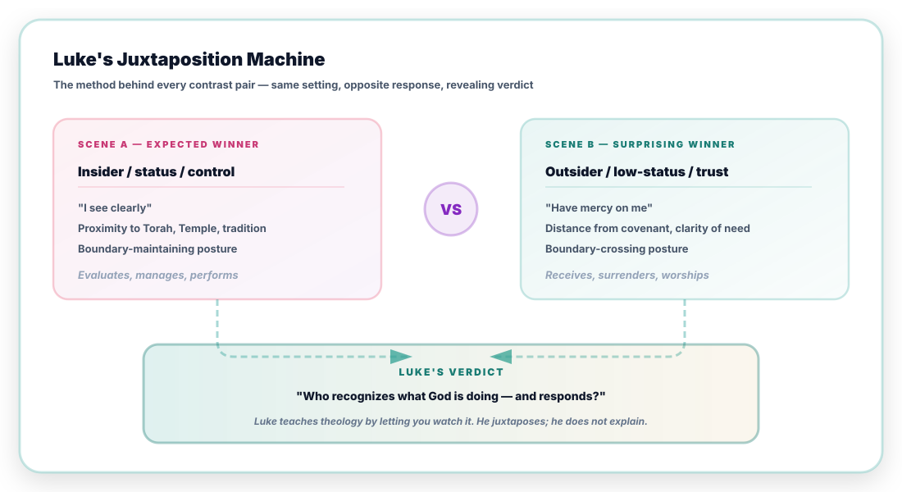
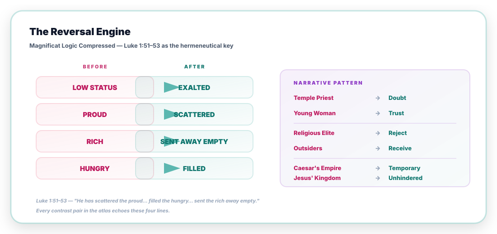
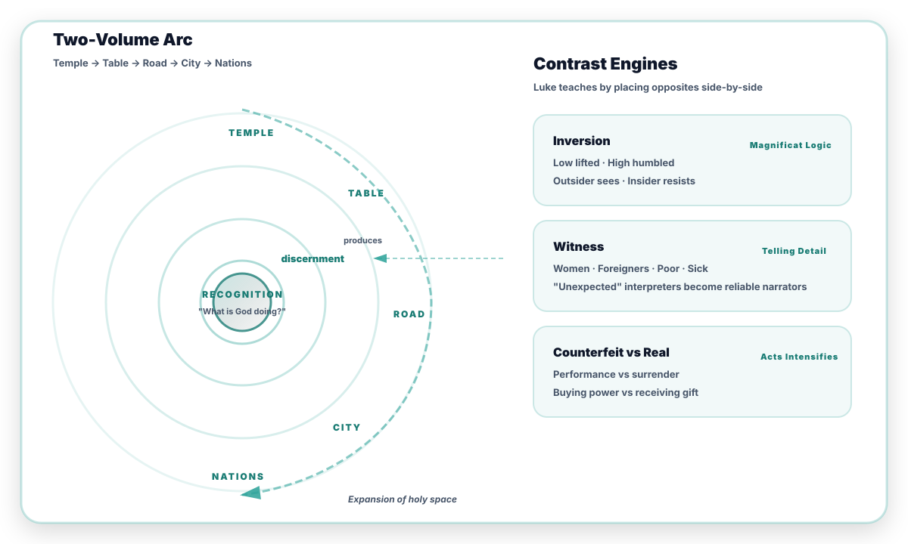
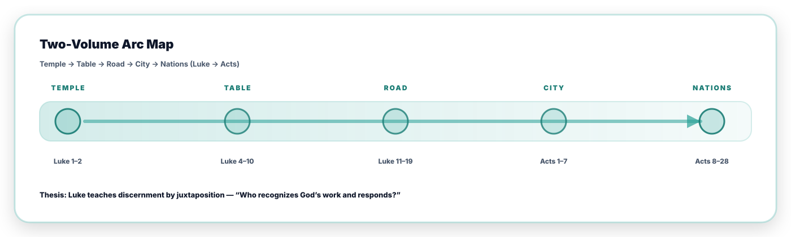
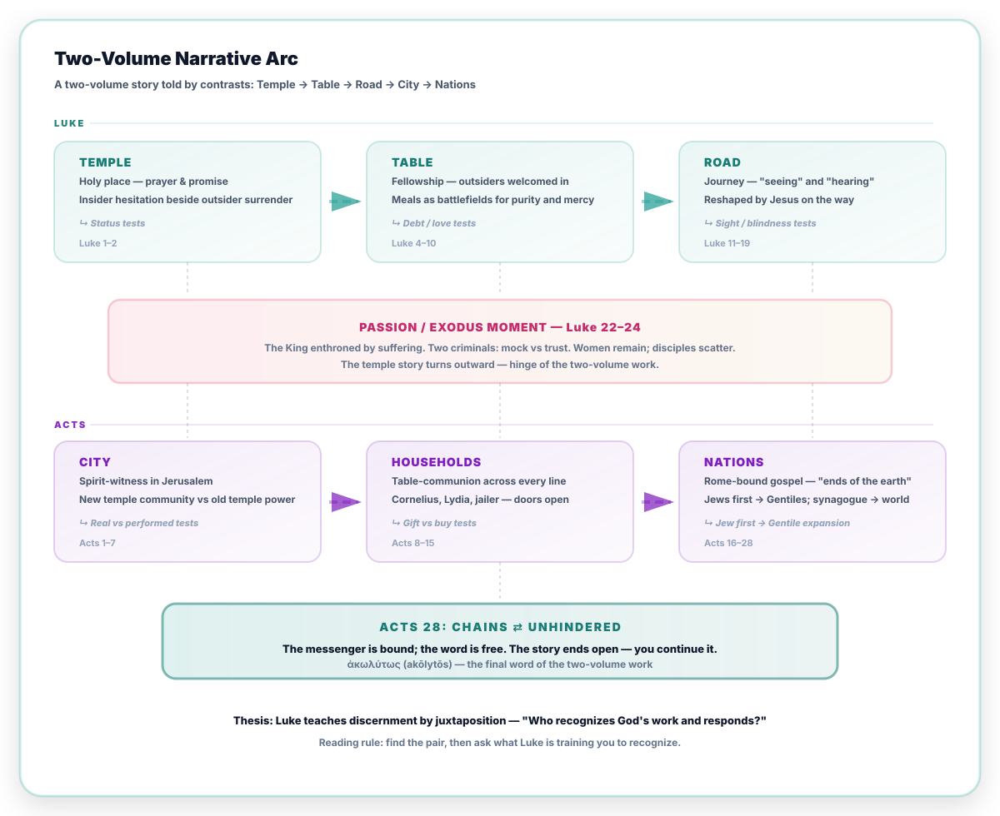
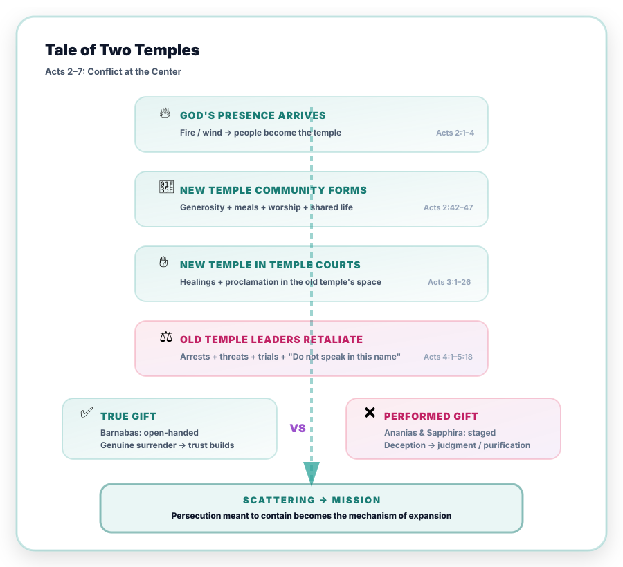
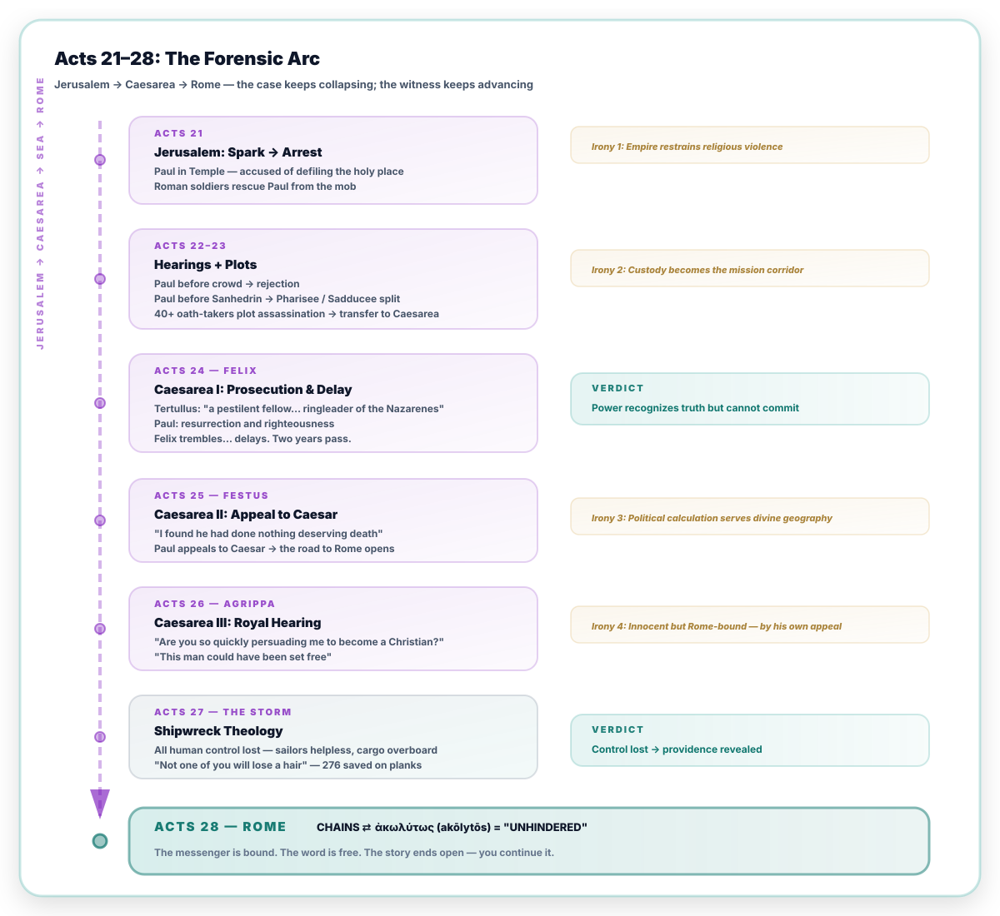
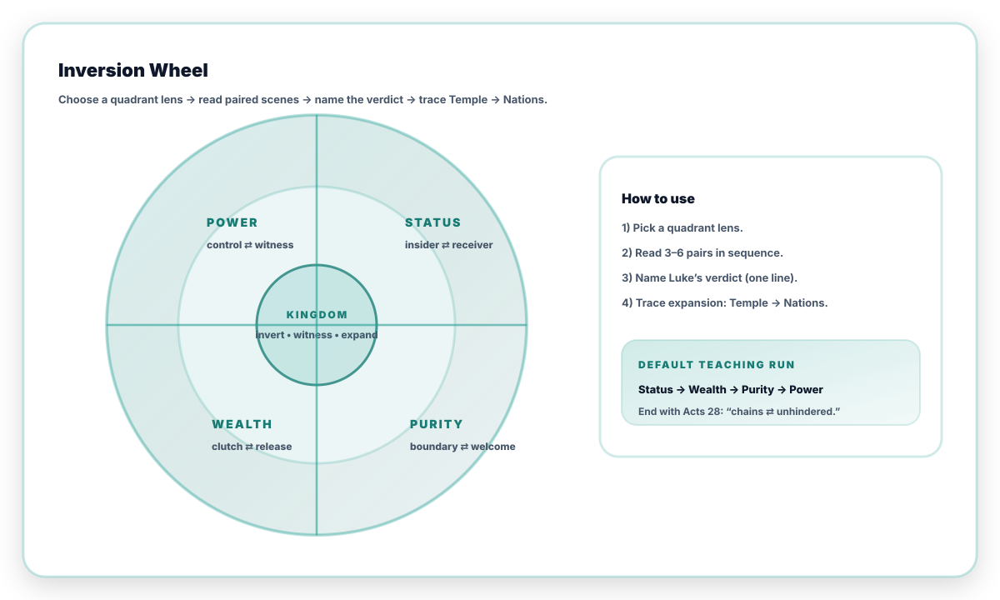

Luke rarely argues by abstract propositions. He trains the reader by juxtaposition:
two responses, two postures, two outcomes — until discernment becomes instinct.
Core question:"Who recognizes what God is doing — and responds accordingly?"
Luke's answer is consistently surprising.
How to Use This Atlas
This atlas is a teaching tool, not a commentary. It maps Luke's narrative strategy so you can
trace his argument yourself — in personal study, small group, or sermon preparation.
1
Pick a lens
Choose one of the four quadrants — Status, Wealth, Purity, or Power — or use the filter toolbar to highlight pairs by theme.
2
Read 3–5 pairs
Read the paired scenes in your Bible. Notice who "sees" and who resists. Pay attention to Luke's staging: same setting, opposite response.
3
Name the verdict
Each node includes Luke's narrative resolution. Try writing your own one-line verdict before reading ours.
4
Trace the arc
Follow the expansion: Temple → Table → Road → City → Nations. End with Acts 28 and the word akōlytōs — "unhindered."
For teachers: The "Default Teaching Run" is Status → Wealth → Purity → Power, with 3–5 pairs per quadrant. This traces Luke's full argument in about 90 minutes of guided reading.
Every pair in the atlas follows the same underlying template. Scene A looks like the winner;
Scene B surprises. Luke's verdict reveals what the reader was trained to see:

Thesis
Across two volumes Luke deploys a sustained pedagogy of juxtaposition.
Priest beside peasant girl, Pharisee beside tax collector, chains beside "unhindered" — each
pairing trains the reader to recognize the kingdom's inverted logic. The Magnificat
(Luke 1:46–55) is the thesis statement; the rest of Luke–Acts is the evidence.
Magnificat Logic: "He has brought down the powerful from their thrones, and lifted up
the lowly; he has filled the hungry with good things, and sent the rich away empty"
(Luke 1:52–53). Every contrast pair in this atlas echoes these lines.
The Magnificat compresses Luke's entire argument into four reversals.
These four lines generate the narrative pattern that plays out across both volumes:

Two-Volume Narrative Arc
The whole story moves outward: Temple → Table → Road → City → Nations.
The contrasts do the teaching as the boundary expands.

Luke's three contrast engines — Inversion, Witness, and
Counterfeit vs Real — operate at every stage of the arc. Each engine trains
a different kind of discernment: who is exalted, who is reliable, what is authentic.

Reading rule: find the pair, then ask what Luke is training you to recognize.
Filter the Atlas
Click a lens to highlight matching pairs and collapse empty tracks. Counts update dynamically.
Why the label "Verdict"?
Luke–Acts carries a strong forensic (courtroom) atmosphere. "Verdict" means
Luke's narrative resolution — not a simplistic condemnation.
The Full Story at a Glance
Before diving into 70+ pairs, orient yourself. Luke's two volumes move through three phases each,
hinged at the Passion. Every track in the atlas below maps onto this arc.

Exhaustive Contrast Atlas
70+ contrast pairs across 10 narrative tracks. Open any section to explore its pairs.
LUKEInfancy & Temple PrologueLuke 1–26 pairs▲
Luke opens not in Rome or Athens but in a provincial temple, with an elderly priest and a teenage girl. Every contrast in the two-volume story is seeded here: insider hesitation beside outsider surrender, institutional silence beside marginal joy, priestly performance beside prophetic prayer. The Magnificat is the thesis; the infancy is the overture.
Zechariah ⇄ Mary
Luke 1:5–20, 26–38Receive vs manageStatus
Same angelic visitation; opposite reception.
Priestly hesitation ⇄ peasant surrender.
Verdict: The kingdom's first word goes to the one who says 'yes' without credentials.
Jerusalem's elite is absent from the first revelation.
Verdict: God's headline news is delivered to the night shift.
Simeon & Anna ⇄ Temple establishment
Luke 2:25–38Remnant vs institutionTemple
Prayerful remnant recognizes Messiah.
Institutional center does not lead the recognition.
Verdict: The temple's own faithful see what its administrators miss.
Boy Jesus in the Temple ⇄ parental misunderstanding
Luke 2:41–52Identity vs assumptionTemple
Jesus' identity anchored in the Father's purposes.
Even the faithful must be re-taught.
Verdict: The first word of Jesus redefines what 'home' and 'Father' mean.
LUKEProgrammatic BeginningLuke 3–42 pairs▲
John's desert voice clears the way; Jesus' Spirit-filled mission begins. Then Nazareth: the synagogue that raised him tries to kill him, while he points to Gentile recipients of grace. This two-chapter overture programs the entire narrative — insiders resist, outsiders receive.
John the Baptist ⇄ Jesus
Luke 3:1–20; 4:1–13Forerunner vs fulfillmentWitness
Preparation ⇄ arrival. Water ⇄ Spirit.
Desert voice ⇄ Spirit-filled mission.
Verdict: John clears the road; Jesus walks it.
Nazareth rejection ⇄ Gentile exemplars
Luke 4:16–30Hometown vs outsidersStatus
Familiarity breeds contempt; outsiders receive.
Jesus cites Elijah/Elisha: Gentile recipients.
Verdict: Luke's thesis in miniature: insiders resist, outsiders receive.
Jesus redraws the lines of belonging at table and on the road. Banquets become battlefields where purity and mercy collide. A centurion's faith shames Israel's leaders, a sinful woman's tears outweigh a Pharisee's dinner party, and a Samaritan's hands do what priestly legs walk past. Recognition lives at the margins.
Demons recognize ⇄ humans dispute
Luke 4:33–37; 8:26–39Spiritual sight vs blindnessStatus
Spiritual beings name identity; humans resist implications.
Recognition ≠ discipleship, but it exposes blindness.
Verdict: The demons know more than the theologians.
Pharisees' critique ⇄ forgiven sinner's joy
Luke 5:17–26; 7:36–50Judge vs celebratePurity
Insiders evaluate; outsiders rejoice.
Same event, opposite reactions.
Verdict: Joy is the tell — it reveals who has encountered grace.
Levi's banquet ⇄ religious scandal
Luke 5:27–32Welcome vs policingTable
Tax collector's feast ⇄ Pharisees' outrage.
'I have not come to call the righteous.'
Verdict: The table is the battlefield where purity and mercy collide.
Centurion ⇄ Israel's leaders
Luke 7:1–10Outsider faith vs insider assumptionStatus
Outsider trusts Jesus' authority; insiders question it.
'Not even in Israel have I found such faith.'
Verdict: Military rank bows to kingdom authority; religious rank resists it.
LUKEPrayer, Money, and ReversalLuke 11–1810 pairs▲
The journey section deepens the inversion. Wealth becomes a diagnostic: the rich fool stores, the unjust steward releases, the rich man ignores Lazarus at his gate. Prayer becomes the curriculum of dependence — the Pharisee performs, the tax collector surrenders. Luke piles contrast on contrast until the pattern becomes unmistakable.
Marginal man shouts for mercy; crowds silence him.
Persistence of faith defeats social gatekeeping.
Verdict: Those the crowd dismisses are the ones who see most clearly.
LUKEJerusalem, Passion, and ResurrectionLuke 19–249 pairs▲
The hinge of the two-volume story. Zacchaeus releases what the rich ruler clutched. At the table of self-giving, the disciples argue about rank. At the cross, one criminal mocks while the other trusts. A pagan centurion delivers the verdict the Sanhedrin couldn't. The women remain; the men scatter. Then Emmaus: closed eyes opened at the breaking of bread.
Zacchaeus ⇄ rich ruler
Luke 19:1–10; 18:18–23Release vs clutchWealth
Joyful welcome yields fourfold restitution.
Concrete release is the tell of genuine encounter.
Male disciples dismiss their report as 'an idle tale.'
Verdict: The first witnesses of the resurrection are the ones the court would not admit.
Emmaus: closed eyes ⇄ opened eyes
Luke 24:13–35Blindness to recognitionRoad
Walking with Jesus, unable to see.
'Were not our hearts burning?' — recognition at the table.
Verdict: The journey from despair to recognition is a table-length away.
Entering Acts. The Spirit arrives and the new community immediately faces its first authenticity test. This diagram maps the escalation from Pentecost through the Barnabas/Ananias split to the scattering that becomes mission:

ACTSJerusalem Church: Real vs CounterfeitActs 1–57 pairs▲
The new community is tested immediately by authenticity. Pentecost splits the crowd — amazement beside mockery. Barnabas gives genuinely; Ananias and Sapphira perform generosity. Bold prayer answers intimidation. The Spirit discerns what committees cannot: the difference between the real and the counterfeit.
Prayerful waiting ⇄ impulsive replacement logic
Acts 1:12–26Wait vs controlPower
Community prays and waits for Spirit.
Human logic fills the vacancy; Spirit reshapes everything.
Verdict: The first church act is prayer, not planning.
Pentecost amazement ⇄ mockery
Acts 2:1–13Awe vs dismissalWitness
Spirit poured out; some amazed, some sneer.
'They are filled with new wine.'
Verdict: Same event, split response — the pattern continues immediately.
Verdict: The community answers coercion with prayer, not retreat.
Gamaliel's restraint ⇄ Council's suppression
Acts 5:33–42Restraint vs suppressionPower
'If it is from God, you cannot overthrow it.'
Wisdom within the system recognizes what ideology cannot.
Verdict: Even insiders can practice discernment — when they release control.
ACTSScattering: Stephen to SaulActs 6–97 pairs▲
Stephen's death scatters the church — and scattering becomes sowing. The gospel crosses every line Jerusalem drew: Samaritans receive the Spirit, an Ethiopian eunuch is baptized, and the chief persecutor is blinded into sight. Persecution, meant to contain, becomes the mechanism of expansion.
Hellenist widows neglected ⇄ Spirit-led distribution
Acts 6:1–7Neglect vs careTable
Complaint addressed structurally, not suppressed.
Word + table both honored.
Verdict: The table becomes an arena for justice and unity.
Stephen 'open heavens' ⇄ Council 'stopped ears'
Acts 6:8–7:60Vision vs refusalWitness
Stephen sees glory; Council covers their ears.
Maximum revelation meets maximum resistance.
Verdict: Open heavens for one; stopped ears for the rest. Same room.
Stephen's forgiveness ⇄ Saul's violence
Acts 7:58–8:3Grace vs ragePower
'Lord, do not hold this sin against them.'
Saul approves the execution — and begins his own hunt.
Verdict: The martyr forgives; the future apostle holds the coats.
Verdict: The gospel runs ahead of the institution's comfort zone.
Peter ⇄ Simon Magus
Acts 8:18–24Gift vs purchasePower
Spirit is gift ⇄ Simon offers cash.
Counterfeit power theme intensifies.
Verdict: You cannot buy what can only be given.
Ethiopian eunuch welcomed ⇄ boundary assumptions
Acts 8:26–39Inclusion vs exclusionPurity
Excluded body (Deut 23:1) becomes included believer.
Scripture opened + baptism = new belonging.
Verdict: The Spirit sends Philip to the one the law locked out.
Saul persecutor ⇄ Saul commissioned
Acts 9:1–22Destroy vs buildWitness
Chief opponent becomes chief instrument.
Blindness → sight inverted on the persecutor himself.
Verdict: Grace doesn't recruit the willing; it converts the hostile.
ACTSBoundary Breaking: Cornelius to CouncilActs 10–156 pairs▲
The hardest theological work in Acts happens at a dinner table. Peter's vision overrules his purity reflex. The Spirit falls on Cornelius before Peter finishes his sermon. The Jerusalem Council decides to stop adding requirements to grace. The boundary of holiness expands — not by lowering standards, but by the Spirit redefining 'clean.'
Peter's vision ⇄ purity reflex
Acts 10:9–16; 11:1–18New holiness vs old boundaryPurity
'Do not call unclean what God has cleansed.'
Peter's reflex: 'Never, Lord!' — three times.
Verdict: God has to overrule Peter's theology before Peter can eat with Cornelius.
Verdict: The church's most important decision was to stop adding requirements to grace.
ACTSPaul's Mission CyclesActs 13–2010 pairs▲
Paul's journeys repeat Luke's pattern at continental scale. Synagogue welcome flips to rejection. A Roman proconsul opens to truth while a sorcerer resists. Lydia's heart opens; the market spirit enslaves. Bereans examine Scripture eagerly; Thessalonians raise a mob. Magic books burn in Ephesus; the Artemis economy riots. Weakness is the mode of the Spirit's advance.
Synagogue invitation ⇄ rejection
Acts 13:13–52Welcome vs resistWitness
Good news heard then opposed.
'We turn to the Gentiles' — repeated turning point.
Verdict: Luke repeats synagogue → division → Gentile turn as cumulative argument.
Verdict: Honest investigation leads to faith; threatened status produces violence.
Athens curiosity ⇄ resurrection offense
Acts 17:16–34Interest vs repentanceStatus
Philosophical curiosity ⇄ sneering at resurrection.
'Some mocked… but some joined.'
Verdict: Intellectual fascination is not the same as faith.
Ephesus magic books burned ⇄ trade riot
Acts 19:11–41Renounce vs riotWealth
Costly renunciation of occult practice.
Artemis-economy backlash: 'Great is Artemis!'
Verdict: When worship changes, economies shake.
Paul's 'weak' suffering ⇄ Spirit's power
Acts 14:19–20; 16:22–25; 20:22–24Weakness vs powerPower
Beatings, stonings, prisons — mission never stops.
Power through weakness spans the entire section.
Verdict: Fragility is the mode of the Spirit's advance.
ACTSPaul on Trial: Mirror of JesusActs 20–285 pairs▲
Paul's trials mirror Jesus' passion. Religious accusation, Roman protection, royal hearing — the 'accused' is the real witness and the 'judges' are the ones on trial. A shipwreck strips every competency; providence carries the mission on broken planks. The final word of Acts: akōlytōs — 'unhindered.' The messenger is bound; the word is free.
Farewell tears ⇄ wolves warning
Acts 20:17–38Care vs threatWitness
Paul weeps with elders; warns of wolves.
Shepherding language echoes Jesus' own.
Verdict: Pastoral vigilance guards the gospel community.
Temple accusation ⇄ Roman protection
Acts 21:27–36Mob vs lawPower
Religious mob attacks; Roman soldiers rescue.
Irony: empire becomes the gospel's shield.
Verdict: The temple that should protect becomes the threat.
Felix/Drusilla delays ⇄ 'almost persuaded'
Acts 24:24–27; 26:28Delay vs near-receptionStatus
Felix trembles but procrastinates; Agrippa 'almost persuaded.'
Power recognizes truth but cannot commit.
Verdict: Almost persuaded is still not persuaded.
Shipwreck helplessness ⇄ providential survival
Acts 27:13–44Chaos vs providenceRoad
All human control lost at sea.
'Not one of you will lose a hair.'
Verdict: When every competency fails, providence carries the mission.
Chains ⇄ 'unhindered' word
Acts 28:16–31Bound messenger vs free wordPower
Paul in chains, under guard.
Final word: akōlytōs — 'unhindered.'
Verdict: The messenger is bound; the word is free. The story ends open — you continue it.
Luke deliberately structures Acts so that Peter and Paul mirror each other — same signs, same speeches,
same authority. This is not coincidence; it's a structural argument that the same Spirit drives both missions.
The parallels validate Paul's apostleship and confirm the unity of the Jewish and Gentile churches.
PeterPaul
Healing the lame (Acts 3:1–10)
Temple gate; "look at us"; instant healing; public proclamation follows.
⇄
Healing the lame (Acts 14:8–10)
Lystra; "stand upright"; instant healing; misidentified as gods.
Major speech (Acts 2:14–40)
Pentecost sermon; Israel's story → Jesus → repentance → Spirit.
⇄
Major speech (Acts 13:16–41)
Antioch Pisidia sermon; Israel's story → Jesus → forgiveness → warning.
Luke's structural argument: The same Spirit that empowered Peter among Jews empowers Paul among Gentiles.
Parallel signs validate a single mission. The two apostles are not rivals — they are evidence of one expanding kingdom.
Acts 21–28: Forensic Arc
The second half of Acts unfolds like a sustained legal drama. Accusations escalate,
hearings multiply, and Roman authorities repeatedly fail to find a legitimate charge.

Why "forensic"? Luke frames the entire second half of Acts as a trial narrative.
Every hearing renders the same implicit verdict: this movement is innocent. The "accused"
is the real witness; the "judges" are the ones on trial.
Four Lenses
Every contrast pair in the atlas operates through one or more of four lenses.
Pick a quadrant, read 3–5 pairs, and trace the pattern from Temple to Nations:

Status: Insider ⇄ Receiver
Luke's most frequent lens. Status — religious, social, ethnic — creates assumed proximity to God. But recognition doesn't follow résumé.
Money is Luke's second teaching engine. Possessions reveal where trust actually resides.
Best pairs to teach this: Rich ruler/Zacchaeus · Rich man/Lazarus · Magnificat · Barnabas/Ananias-Sapphira · Ephesus burn/riot · Lydia/Market spirit.
Purity: Boundary ⇄ Welcome
Who belongs? The boundary of holiness expands from temple to table to nations — not by lowering standards, but by the Spirit redefining "clean."
Best pairs to teach this: Samaritan/insiders · Ten lepers · Ethiopian eunuch · Cornelius/Peter's vision · Jerusalem Council.
Power: Control ⇄ Witness
Control tries to manage the gospel; witness surrenders to it. Luke's final inversion: the bound messenger speaks the unhindered word.
Best pairs to teach this: Simon Magus/Peter · Herod/Peter's deliverance · Empire shield/temple violence · Paul's suffering/Spirit's power · Chains/Unhindered.
Conclusion: The Atlas as Pedagogy
Luke's sustained method of juxtaposition is not decorative — it is the pedagogy itself.
Seventy-plus contrast pairs, ten narrative tracks, four thematic lenses, one question:
"Who recognizes what God is doing?"
🔄 Pattern
Same event, split response — repeated until discernment becomes instinct.
📖 Method
Luke shows rather than tells. Juxtaposition replaces proposition.
🌍 Direction
Temple → Nations. The boundary of holiness expands, never contracts.
⛓️ End State
Chains ⇄ "Unhindered." The story ends open — you continue it.
For Teachers and Preachers
Pick any quadrant. Read 3–5 pairs in sequence. Ask: who "sees," who resists, and what does the Spirit do next? Then trace the line all the way to Acts 28 and the word akōlytōs.
Bibliography & Sources
The contrast architecture of Luke–Acts has been explored across narrative,
theological, and historical scholarship. These works shaped the interpretive framework of this atlas.
Tannehill, Robert C.
The Narrative Unity of Luke–Acts. 2 vols. Fortress, 1986–1990.
The definitive study of Luke–Acts as a single narrative. Contrast patterns and two-volume structural unity throughout. Foundational for this atlas.
Core Framework
Green, Joel B.
The Gospel of Luke. NICNT. Eerdmans, 1997. The Theology of the Gospel of Luke. Cambridge, 1995.
Literary-theological reading of Luke's contrasts. Explores honor/shame, wealth, marginalization, and reversal motifs.
Detailed exegetical treatment of each pericope. Courtroom language and Roman trial scenes in Acts.
Exegesis
Wright, N. T.
Luke for Everyone / Acts for Everyone. SPCK, 2001–2008. The Challenge of Acts.
Acts as continuation of Israel's story. Repeated reversal themes and public vindication of the gospel within history.
Theological Framework
Hays, Richard B.
Echoes of Scripture in the Gospels. Baylor, 2016.
OT echo patterns in Luke's Gospel. Intertextual method directly supports the contrast-pair analysis.
Intertextuality
Rowe, C. Kavin
World Upside Down: Reading Acts in the Graeco-Roman Age. OUP, 2009.
Cultural inversion patterns in Acts. The "world upside down" motif maps directly onto the power quadrant.
Acts Framework
Johnson, Luke Timothy
The Acts of the Apostles. Sacra Pagina. Liturgical Press, 1992. The Literary Function of Possessions in Luke-Acts. Scholars Press, 1977.
Theological shaping of apostolic witness. Possessions as a Lukan theological motif — foundational for the wealth quadrant.
Wealth & Possessions
Spencer, F. Scott
Salty Wives, Spirited Mothers, and Savvy Widows. Eerdmans, 2012.
Women as recognition figures in Luke–Acts. Directly supports the status inversion patterns.
Gender & Status
Pervo, Richard I.
Acts: A Commentary. Hermeneia. Fortress, 2009.
Acts as ancient historiography with apologetic dimensions. Forensic-arc analysis of the trial narratives.
Forensic Arc
Neyrey, Jerome H., ed.
The Social World of Luke-Acts. Hendrickson, 1991.
Purity/pollution analysis in social-scientific framework. Maps directly onto the purity quadrant.
Purity & Boundaries
Gaventa, Beverly Roberts
The Acts of the Apostles. Abingdon, 2003.
Trial narratives and forensic structure in Acts 21–28. Community formation under pressure.
Forensic Arc
Marguerat, Daniel
The First Christian Historian: Writing the 'Acts of the Apostles'. Cambridge, 2002.
Luke as historian and rhetorician. Forensic rhetoric and narrative persuasion in Acts.
Rhetoric & Method
These works do not always frame Luke–Acts explicitly as a "contrast atlas,"
but together they illuminate Luke's narrative strategy, reversal logic,
and sustained forensic atmosphere. Tannehill's Narrative Unity comes closest
to the structural method used here.